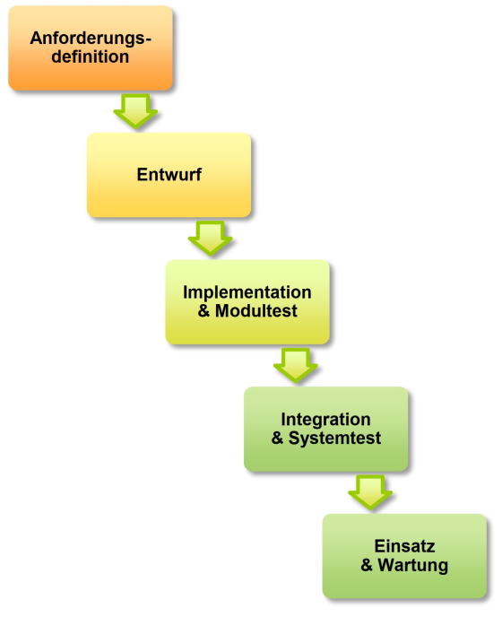
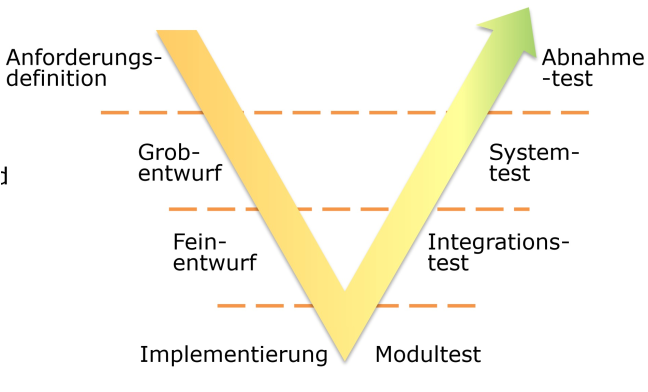
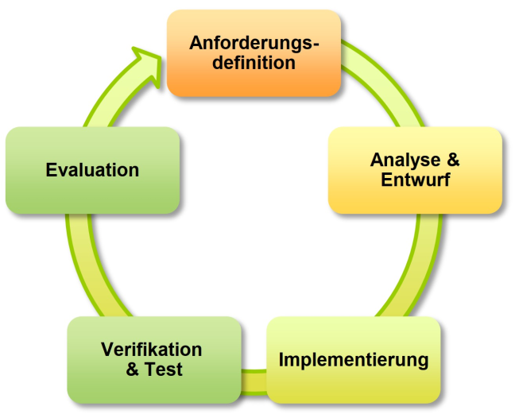

Softwareentwurf#
Architecture is about the important stuff — whatever that is.
— Ralph Johnson
Folien/PDF#
Wiederholung: Hörsaalfrage#
Was sind die vier Grundelemente eines Programms?
Wiederholung: Programmelemente#
Wir kennen alle grundlegenden Grundelemente eines Programms:
Statements
Funktionen
Verzweigungen
Schleifen & Rekursion
Wir wissen wie man Algorithmen plant und diese Elemente kombinieren kann.
Objektorientierter Softwareentwurf mit UML#
Im objektorientierten Softwareentwurf, wird ein Programm so entworfen, dass es nur aus Objekten besteht. Hierbei verwendet man meist die Modellierungssprache UML können Klassen auch visuell entworfen werden. Man modelliert im Entwurf wie:
diese Objekte in Form von Klassen definiert sind,
welche Attribute und Methoden sie besitzen,
wie diese Klassen aufeinander aufbauen (Vererbung),
als auch wie sie miteinander in statischer Beziehung stehen (Referenzen)
und wie sie dynamisch interagieren (Verhalten)
Klassen, Attribute und Methoden#
Eine Klasse ist hierbei nur ein Viereck mit drei Ebenen. In der ersten Ebene schreibt man den Klassennamen. In der zweiten Ebene listet man alle primitiven Attribute einer Klasse (welche keine Referenzen darstellen). Die dritte Ebene enthält alle Methoden der Klasse. Für den zuvor definierten Point mit den Attributen x und y und der Methode distance() eines anderen Punktes sieht die Klasse in UML so aus:
Referenzen#
Eine sehr wichtige Arbeit mit UML ist die Visualisierung von Abhängigkeiten zwischen Klassen in Form von Referenzen. Man unterscheidet in UML die Referenzen in der Art der Besitzverhältnisse, also ob ein Objekt Teil eines anderen ist und ohne ihn existieren kann (Aggregated) oder nicht ohne diesen existieren kann (Composition) oder komplett unabhängig ist (Assoziation). Hierfür definiert UML unterschiedliche Pfeiltypen. Hierbei kann man an den Linien die Häufigkeit (Multiplizität) der Ursprungs- und Zielklasse angeben.
Die zuvor definierte Klasse Line beinhaltet den start- und end-Punkt. Das stellt in UML eine Aggregation dar, weil die Punkte ja zur Linie gehören, allerdings durchaus auch separat existieren können (wir brauchen ja keine Linie um einen Punkt zu definieren). Die Multiplizität ist hierbei, dass je 1 Instanz einer Line je 2 Instanzen der Klasse Point besitzt.
Vererbung#
Ein wichtiger Aspekt in der Arbeit mit UML ist die Vererbung. Die Vererbung wird in UML durch eine Referenz mit einem gefüllten Dreick “▲” bei der Oberklasse (es ist kein Pfeil) gezeichnet. Um zum Beispiel auszudrücken, dass Triangle, Tetragon und Pentagon Unterklassen des Polygons sind, können wir zeichnen.
Fügen wir die einzelnen Elemente zusammen, so sieht das UML-Diagramm unseres Klassen-Modells wie folgt aus:
Auf Basis dieses UML-Diagramms, würde ein Programmierer die Zusammenhänge der Klassen verstehen und könnte diese entsprechend implementieren. Sie eignen sich besonders gut, um solche Datenstrukturen zu definieren und zu kommunizieren.
Dieses Modell können wir jetzt weiter verfeinern und weitere spezifischer Klassen für Dreiecke einführen wie rechtwinklige (Right), spitzwinklige (Acute) und stumpfwinklige (Obtuse) Dreiecke die unregelmäßig (Scalene), gleichschenklig (Isosceles) oder gleichseitig (Equilateral) sein können. Genauso können wir Vierecke klassifizieren in Trapeze, Parallelogramme und Drachen (Kite) mit den Spezialisierungen Rhombus, Rechteck und Quadrat (Square).
Jede Instanz dieser speziellen Klassen erbt dabei die Funktionen area() und __str__(). Wir haben also mit der einen generischen Implementation von area() zur Flächenberechnung eines Polygons, nur eine einzige Methode implementieren müssen, die die Flächenberechnung aller geometrischen Grundelemente abdeckt, ohne eine weitere Zeile Code für diese schreiben zu müssen.
Entlang der Vererbungshierarchie könnte man jetzt weitere Attribute und Methoden definieren, welche spezifische Berechnungen durchführen können oder z.B. testen ob die Punkte, Linien und Winkel den entsprechenden Bedingungen entsprechen. Dies ist jedoch außerhalb des Rahmens dieses Beispiels.
Entwurfsvorgehen in der Softwareentwicklung#
Software wird heute fast ausschließlich im Team über längere Zeiträume entwickelt. Diese Teamarbeit erfordert einen durchdachten Projektplan, der sowohl den strukturellen Aufbau der Software als auch das zeitliche Vorgehen bei der Entwicklung festlegt. Der Softwareentwurf umfasst daher zwei wesentliche Komponenten: den Bauplan in Form des Klassenentwurfs und die Bauablaufplanung als Programmiervorgehen.
Das Vorgehen beim Softwareentwurf zeigt bemerkenswerte Ähnlichkeiten mit etablierten Praktiken im Bau- und Umweltingenieurwesen. Genau wie beim Bau einer Brücke oder einer Kläranlage müssen auch bei der Softwareentwicklung die Anforderungen klar definiert, ein strukturierter Entwurf erstellt und die Umsetzung systematisch geplant werden. Diese Parallelen helfen dabei, die Prinzipien des Softwareentwurfs besser zu verstehen.
Ein strukturiertes Vorgehen ist essentiell, weil es Teamarbeit ermöglicht, Qualität sicherstellt und Kosten kontrollierbar macht. Ohne systematische Planung entstehen oft chaotische Entwicklungsprozesse, die zu fehlerhafter Software, Terminüberschreitungen und Budgetproblemen führen.
Die Phasen der Softwareentwicklung#
Anforderungsdefinition#
Die erste Phase dient der präzisen Definition dessen, was die Software leisten soll. Hier werden sowohl die funktionalen Aspekte als auch die Randbedingungen festgelegt. Im Bauingenieurwesen entspricht dies der Ausschreibung, in der dokumentiert wird, welche Funktionen und Randbedingungen das Bauwerk erfüllen muss.
Bei einer Brücke werden beispielsweise die zulässigen Verkehrslasten, die zu überbrückende Spannweite und die geforderte Lebensdauer definiert. Für eine Kläranlage werden die Anzahl der anzuschließenden Einwohner, der geforderte Reinigungsgrad und die einzuhaltenden Grenzwerte spezifiziert. Genauso müssen bei der Softwareentwicklung alle funktionalen Anforderungen, Leistungsparameter und technischen Beschränkungen klar formuliert werden.
Entwurfsphase#
Der Entwurf definiert, wie die Software strukturell aufgebaut werden soll. Diese Phase gliedert sich in die Grobplanung, bei der die Software in logische Module aufgeteilt wird, und die Feinplanung, die festlegt, wann welche Komponenten von wem entwickelt werden.
Im Bauwesen entspricht dies der Architektur- und Entwurfsplanung. Bei einem Hochbau wird zunächst die Grundstruktur mit Fundament, Rohbau und Ausbau geplant, bevor die Details wie Bewehrungspläne und Installationen ausgearbeitet werden. Ähnlich wird bei der Softwareentwicklung erst die Gesamtarchitektur entworfen, bevor die einzelnen Klassen und ihre Schnittstellen definiert werden.
Ausführungsphase#
Die Ausführung umfasst sowohl die Implementation der einzelnen Softwarekomponenten als auch deren Integration zu einem funktionsfähigen Gesamtsystem. Während der Implementation werden die einzelnen Klassen und Module nach den Vorgaben des Entwurfs programmiert. Die anschließende Integration führt diese Einzelteile zur fertigen Lösung zusammen.
Im Bauwesen arbeiten verschiedene Gewerke parallel an ihren spezifischen Aufgaben, bevor ihre Arbeiten koordiniert zusammengeführt werden. Bei einem Wasserbauprojekt werden beispielsweise Pumpstationen, Rohrleitungen und Steuerungssysteme zunächst separat erstellt und dann zu einem funktionsfähigen Wasserversorgungssystem verbunden.
Abnahme und Test#
Die Abnahmephase stellt sicher, dass die fertige Software alle Anforderungen erfüllt. Dies geschieht in mehreren Stufen: Zunächst werden einzelne Module isoliert getestet, dann wird das Zusammenspiel zwischen den Modulen geprüft, und schließlich wird das Gesamtsystem unter realen Bedingungen getestet.
Diese Vorgehensweise entspricht der Bauabnahme, bei der ebenfalls stufenweise vorgegangen wird. Bei einer Kläranlage werden zunächst einzelne Pumpen auf ihre Funktion geprüft, dann das Zusammenspiel von Steuerung, Pumpen und Sensoren getestet, und schließlich wird die gesamte Anlage unter Realbedingungen abgenommen.
Wasserfallmethode - Das traditionelle Entwicklungsmodell#
Die Wasserfallmethode repräsentiert den traditionellen Ansatz der Softwareentwicklung und wird noch heute häufig in Ausschreibungen großer Systeme gefordert. Ihr charakteristisches Merkmal ist die streng sequenzielle Abarbeitung der Entwicklungsphasen, wobei jede Phase vollständig abgeschlossen werden muss, bevor die nächste beginnt.
Diese Methode zeichnet sich durch eine begrenzte Nutzerbeteiligung aus, die hauptsächlich auf die Anforderungsdefinition beschränkt ist. Jede Aktivität wird umfassend dokumentiert, was die Methode besonders für Ausschreibungen und ISO-9000-konforme Entwicklungen geeignet macht.

Der große Vorteil dieser Methode liegt in ihrer Planbarkeit und dem strukturierten Vorgehen. Kosten und Termine lassen sich präzise schätzen, und die umfassende Dokumentation erfüllt alle formalen Anforderungen. Allerdings führt die sequenzielle Natur dazu, dass Fehler aus frühen Phasen erst sehr spät entdeckt werden, was teure Nachbesserungen zur Folge haben kann.
Die Wasserfallmethode entspricht dem traditionellen Bauvorgehen. Bei einer Autobahnbrücke werden zunächst alle Anforderungen in der Ausschreibung definiert, dann erfolgt die komplette Planung von der Statik bis zur Ausführungsplanung, bevor mit dem eigentlichen Bau begonnen wird. Erst nach Fertigstellung des gesamten Bauwerks erfolgen die Belastungstests und die Abnahme.
V-Methode - Entwicklung mit systematischer Testplanung#
Die V-Methode wurde speziell für die Entwicklung sicherheitskritischer Software konzipiert und findet hauptsächlich in der Automobil- und Luftfahrtindustrie Anwendung. Sie erweitert das Wasserfallmodell um eine systematische Testplanung, die bereits während der Entwicklungsphase beginnt.
Das charakteristische V-förmige Modell trennt Entwicklungs- und Testaktivitäten klar voneinander. Während auf der linken Seite die eigentliche Entwicklung stattfindet, werden auf der rechten Seite die entsprechenden Tests definiert und durchgeführt. Jede Entwicklungsphase hat ihre korrespondierende Testphase, wodurch eine hohe Testabdeckung erreicht wird.

Die V-Methode bietet den Vorteil einer systematischen Qualitätssicherung mit hoher Rückverfolgbarkeit. Allerdings ist sie aufwendiger als andere Methoden und eignet sich daher primär für Bereiche, in denen Sicherheit und Zuverlässigkeit oberste Priorität haben.
Im Tunnelbau, einem sicherheitskritischen Bereich des Bauingenieurwesens, wird ähnlich vorgegangen. Bereits während der Planung der Sicherheitssysteme werden die entsprechenden Testverfahren definiert. Für jeden Brandmelder wird festgelegt, wie er getestet wird, für das Zusammenspiel von Brandmeldung und Lüftungssteuerung werden Integrationstests geplant, und für das Gesamtsystem wird eine komplette Evakuierungsübung mit der Feuerwehr konzipiert.
Agile Methode - Flexibilität durch iterative Entwicklung#
Die agile Methode stellt eine moderne Antwort auf die Herausforderungen sich schnell ändernder Anforderungen dar. Anstatt ein komplettes System von Anfang bis Ende zu planen, wird schrittweise entwickelt und kontinuierlich verbessert.
Der agile Ansatz beginnt mit einem Minimal Viable Product, einer einfachsten funktionsfähigen Version der Software. Diese wird dann in regelmäßigen Zyklen erweitert und verbessert, wobei jede Iteration neue Funktionen hinzufügt oder bestehende optimiert. Die Entwicklungszyklen sind typischerweise kurz und dauern meist nur wenige Monate.

Der große Vorteil der agilen Methode liegt in ihrer Flexibilität und der Möglichkeit, frühzeitig Feedback zu erhalten. Benutzer können bereits funktionsfähige Versionen testen und Verbesserungsvorschläge einbringen. Dies reduziert das Risiko, an den tatsächlichen Bedürfnissen vorbei zu entwickeln.
Allerdings birgt die agile Methode auch Risiken. Entwurfsfehler in frühen Iterationen können dazu führen, dass die gesamte Architektur überarbeitet werden muss. Zudem ist die Kosten- und Zeitplanung schwieriger, da das Endprodukt zu Projektbeginn nicht vollständig spezifiziert ist.
Ein Beispiel aus dem Bauwesen ist das modulare Bauen, was insbesondere im Holzbau zunehmend beliebter wird. Anstatt eine Bauwerk komplett zu planen und zu bauen, werden dort zuerst einzelne Module geplant, die man immer wieder miteinander kombinieren kann. Die Module kann man einzeln aufbauen und testen, bevor man sie im finalen Bauwerk zusammen setzt.
Vorgehenswahl in der Praxis#
Die Wahl der geeigneten Vorgehensmodells hängt stark vom Projektkontext ab. Für standardisierte Systeme mit klaren Anforderungen eignet sich die Wasserfallmethode, während sicherheitskritische Anwendungen die systematische Testplanung der V-Methode erfordern. Agile Methoden sind ideal für innovative Projekte mit evolvierende Anforderungen.
In der Ingenieurspraxis zeigt sich, dass oft auch Mischformen sinnvoll sind. Ein Tunnelprojekt könnte beispielsweise die grundlegende Konstruktion nach dem Wasserfallmodell planen, die Sicherheitssysteme nach der V-Methode entwickeln und die Betriebsführungssoftware agil umsetzen.